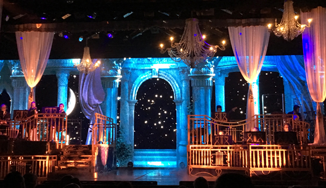
This ship also offered top-notch entertainment from a rock'n'roll show (sadly no photos) to an operatic and show tunes night with an excellent sound system and singers who weren't half bad ...
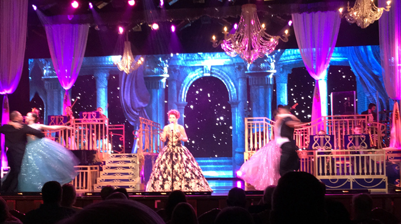
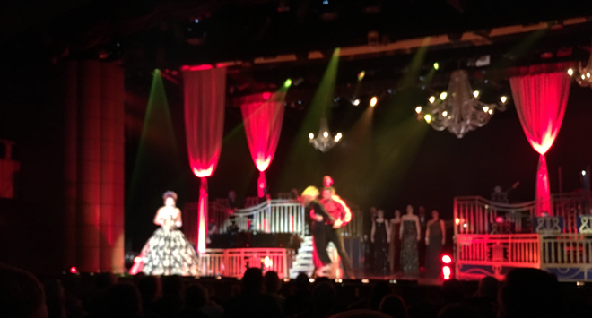
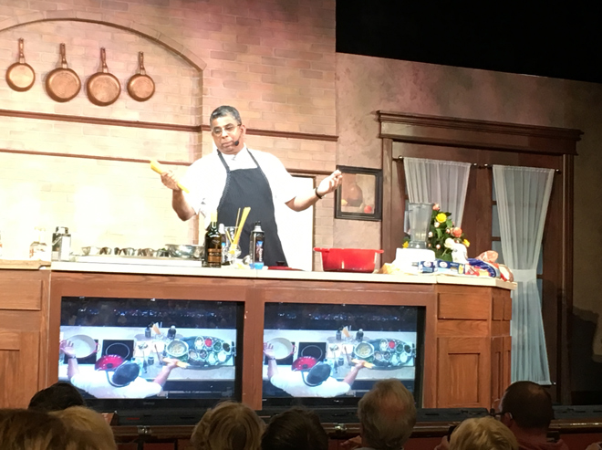
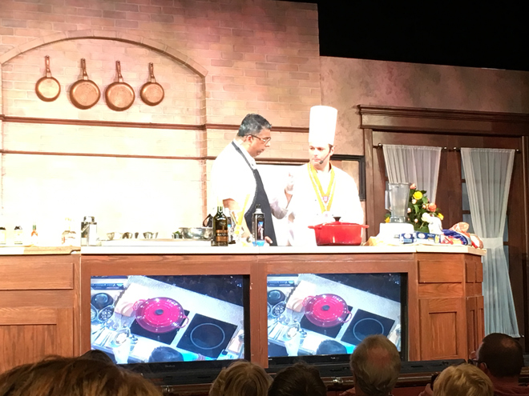
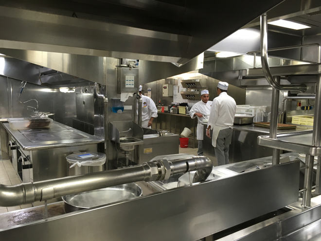
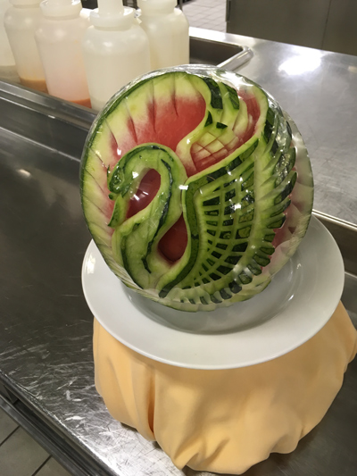
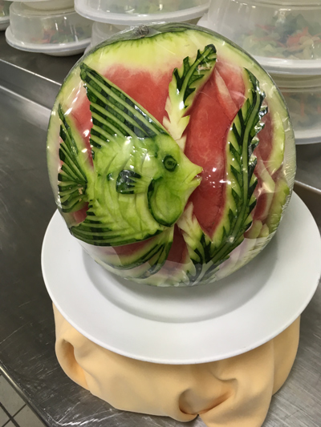
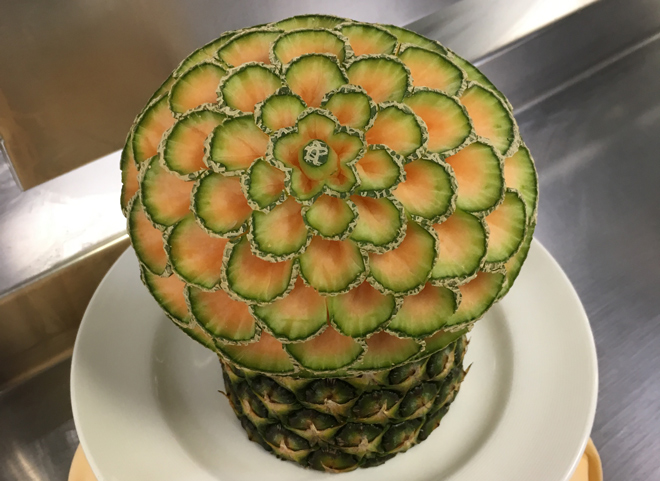
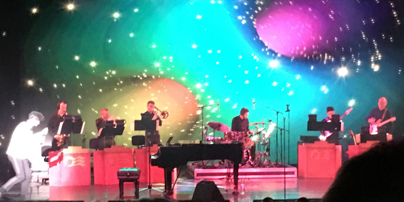
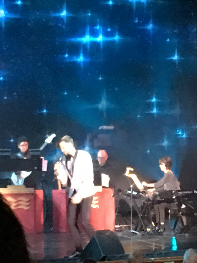
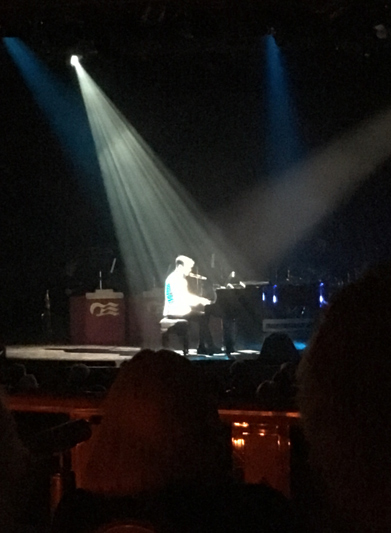
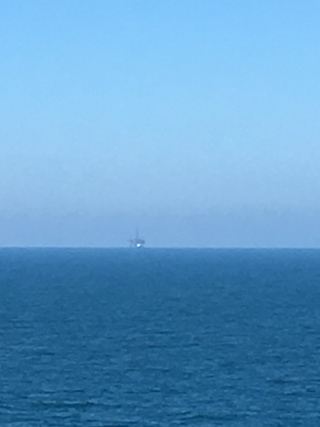
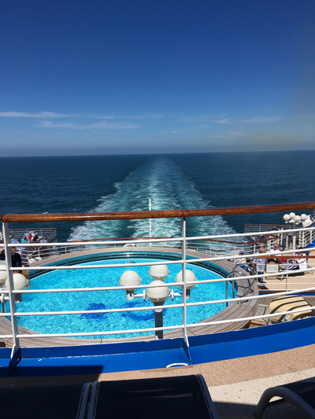